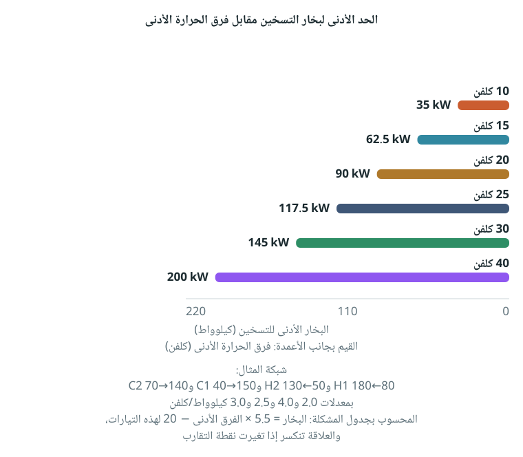

نقطة التقارب الحراري: 90 كيلوواط بخار بدل 485 في شبكة أربعة تيارات
Pinch analysis: minimum utility targets from stream data
تحليل التقارب الحراري يحسب أقل بخار تسخين وأقل ماء تبريد تحتاجهما شبكة تيارات قبل تصميم أي مبادل. في شبكة من أربعة تيارات وفرق حرارة أدنى 20 كلفن، الحد الأدنى 90 كيلوواط بخارًا و125 ماءَ تبريد، بدل 485 و520 بلا تكامل.
وحدة حرارية تُصمَّم عادة مبادلًا بعد مبادل: تُبرد التيارات الساخنة بماء التبريد، وتُسخَّن الباردة بالبخار، ثم يُسأل عن الحرارة المهدرة. تحليل التقارب الحراري (pinch analysis) يعكس الترتيب: يحسب أقل قدرة تسخين وأقل قدرة تبريد يمكن أن تطلبها الشبكة من المرافق قبل رسم أي مبادل، من بيانات التيارات وحدها.
التيارات في المثال: ساخنان H1 من 180 إلى 80 درجة بمعدل سعة 2.0 كيلوواط/كلفن أي 200 كيلوواط، وH2 من 130 إلى 50 بمعدل 4.0 أي 320 كيلوواط؛ وباردان C1 من 40 إلى 150 بمعدل 2.5 أي 275 كيلوواط، وC2 من 70 إلى 140 بمعدل 3.0 أي 210 كيلوواط. إجمالي الحرارة الساخنة المتاحة 520 كيلوواط، والطلب البارد 485 كيلوواط، فالشبكة بلا تكامل ترمي 520 كيلوواط في الهواء وتشتري 485 بالبخار.
بفرق حرارة أدنى 20 كلفن بين أي تيارين متلامسين، يخرج جدول المشكلة بأقل بخار 90 كيلوواط وأقل ماء تبريد 125 كيلوواط، أي استرداد 430 كيلوواط أي 82.7% من الحرارة المتاحة. الوفر 395 كيلوواط بخارًا هو ما يشتريه التكامل.
والبخار نفسه له كلفة تُقاس بالكيلوغرام: بخار مشبع عند 10 بار حراريته 179.88 درجة وحرارته الكامنة 2013.56 كيلوجول/كغ، فـ90 كيلوواط تعني 160.9 كغم/ساعة مقابل 867.1 كغم/ساعة لو سُخِّن كل تيار بمعزل. الرقم الذي يحدد هذا الفرق ليس حجم المبادلات بل خيار واحد: كم كلفنًا نسمح به بين التيارين المتلامسين.
كيف تعمل الظاهرة؟
كل تيار يُقطَع إلى فترات حرارة عند حدوده وحدود غيره، ثم تُحسب السعة الحرارية الصافية لكل فترة: مجموع معدلات السعة للتيارات الساخنة ناقص مجموع الباردة. الحرارة تنزل من أعلى الشبكة إلى أسفلها، وكل فترة تضيف إلى التدفق النازل مقدار (الصافي × فرق الحرارة)؛ حيث يغلب الساخن يرتفع التدفق، وحيث تغلب التيارات الباردة يهبط. أقل قيمة يبلغها هذا التدفق هي مقدار البخار الواجب إدخاله من الأعلى لتظل كل الفترات موجبة، وما يخرج من الأسفل هو ماء التبريد. النقطة التي يبلغ فيها التدفق صفرًا هي نقطة التقارب: فوقها لا تسحب حرارة، وتحتها لا تُدخل حرارة، لأن كل كيلوواط يعبر هذه النقطة يُدفع مرتين، بخارًا إضافيًّا من أعلى وماء تبريد إضافيًّا من أسفل.
العلاقة بالأرقام
معادلة كل فترة: ΔH = (مجموع السعة الساخنة − مجموع السعة الباردة) × ΔT، ثم تُجمع تنازليًّا، والبخار الأدنى هو أكبر قيمة سالبة في هذا المجموع قبل الإزاحة، وماء التبريد = البخار الأدنى − (صافي كل الفترات). ولأن المقارنة تجري بتلامس، تُنقص حرارة التيار الساخن ΔTmin/2 وتُزاد حرارة البارد ΔTmin/2. في المثال عند 20 كلفن: بخار 90 كيلوواط، ماء 125، والاتزان 90 + 520 = 610 = 125 + 485. وإعادة الحساب عند 10 و15 و25 و30 و40 كلفن تعطي 35 و62.5 و117.5 و145 و200 كيلوواط، أي أن البخار الأدنى = 5.5 × ΔTmin − 20 في هذه التيارات تحديدًا، فكل كلفن إضافي في الفرق الأدنى يكلّف 5.5 كيلوواط من الوقود.
مفاهيم متقاربة
تحليل التقارب ليس قياس أقرب فرق حرارة في شبكة قائمة: الشبكة القائمة قد تحوي مبادلًا بفرق 5 كلفن وآخر بفرق 60، والرقم المحسوب حدّ أعلى للشبكة كلها لا وصف لأي وحدة فيها. وهو ليس منحنى مركّبًا يُرسم بالعين: المنحنيات تنطبق بصريًّا على شبكات لها نقاط تقارب متعددة، والحكم يأتي من الجدول لا من الرسم. وΔTmin ليس كفاءة ولا فعالية مبادل، بل قرار اقتصادي واحد بين مساحة التبادل والوقود، يُفرض على كل الفترات. وأخيرًا ناتج التحليل هدف لا تصميم: أن يكون البخار الأدنى 90 كيلوواط لا يعني أن الشبكة الممكنة تبلغه بأقل رأس مال، ولا أن المبادلات القائمة تُعاد ترتيبها وحدها.
حدود التطبيق
الحساب يفترض سعة حرارية ثابتة في كل تيار، وهو مقبول للسوائل وضعيف للغازات واسع المدى؛ والتيارات ذات التغير الطوري تُقطَّع بالحرارة الكامنة لا بمعدل سعة واحد. ويفترض حالة مستقرة وفقدًا حراريًّا مهملًا. ويستخدم فرق حرارة أدنى واحدًا لكل الفترات، بينما الواقع يفرّق بينها بحسب معاملات النقل والمواد. وأهم حد: الأهداف لا تعرف كلفة المساحة ولا هبوط الضغط ولا عدد المباخر، فشبكة تحقق 90 كيلوواط قد تحتاج مساحة تتجاوز ما يشتريه الوفر. والخطية بين البخار الأدنى والفرق الأدنى في هذا المثال نتيجة هندسة هذه التيارات وحدها، وتنكسر عند تغير نقطة التقارب أو عند وجود نقطة تقارب ثانية أو حالة حدّية لا تحتاج بخارًا أصلًا.

| الكمية | القيمة | المصدر |
|---|---|---|
| درجة تشبّع البخار عند 10 بار | 179.88 °C | [2] |
| الحرارة الكامنة للتبخر عند 10 بار | 2013.56 kJ/kg | [2] |
| إجمالي الحرارة المتاحة من التيارات الساخنة في المثال | 520 kW | [1] |
| الحد الأدنى لبخار التسخين عند فرق أدنى 20 كلفن | 90 kW | [1] |
| الحد الأدنى لماء التبريد عند فرق أدنى 20 كلفن | 125 kW | [1] |
| الحرارة المستردة بين التيارات | 430 kW | [1] |
| نسبة الاسترداد من الحرارة الساخنة المتاحة | 82.7 % | [1] |
| بخار التسخين المطلوب بلا تكامل بين التيارات | 485 kW | [1] |
| استهلاك البخار عند الحد الأدنى 90 كيلوواط | 160.9 kg/h | [1] |
| استهلاك البخار بلا تكامل | 867.1 kg/h | [1] |
| الوفر في طلب البخار | 395 kW | [1] |
| ميل البخار الأدنى مقابل الفرق الأدنى في هذه التيارات | 5.5 kW/K | [1] |
المصادر
- 1 Heat integration of ethanol and yeast manufacture — pinch analysis and heat exchanger network design — Macedonian Journal of Chemistry and Chemical Engineering. mjcce.org.mk/index.php/MJCCE/article/view/268 · اطُّلع عليه 2026-11-21
- 2 Thermodynamic Properties of Saturated Steam — Data and Charts in Bar — Engineering ToolBox. www.engineeringtoolbox.com/saturated-steam-properties-d_457.html · اطُّلع عليه 2026-11-21
- 3 Application of pinch analysis to improve the heat integration efficiency in a crude distillation unit — Cleaner Engineering and Technology (Elsevier, open access). doi.org/10.1016/j.clet.2021.100128 · اطُّلع عليه 2026-11-21
استشهد بهذا المصطلح
الصيغتان مبنيتان من بيانات الصفحة نفسها: العنوان والتاريخ ورابط النسخة المنشورة.
نقطة التقارب الحراري: 90 كيلوواط بخار بدل 485 في شبكة أربعة تيارات — Pinch analysis: minimum utility targets from stream data. (2026). ديوان المعرفة — انفراد. https://infiradev.com/diwan/terms/pinch-analysis.html
@misc{pinch-analysis2026,
title = {نقطة التقارب الحراري: 90 كيلوواط بخار بدل 485 في شبكة أربعة تيارات},
titleaddon = {Pinch analysis: minimum utility targets from stream data},
howpublished = {{ديوان المعرفة — انفراد} — مرجع علمي عربي},
year = {2026},
url = {https://infiradev.com/diwan/terms/pinch-analysis.html},
urldate = {2026-11-22},
note = {مراجعة علمية: عبدالله الهويدي — مراجعة في تطبيق انفراد}
}
راجعه: عبدالله الهويدي — مراجعة في تطبيق انفراد · 2026-11-22 · آخر تحديث 2026-11-22